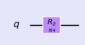
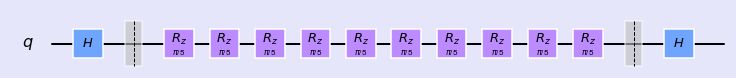
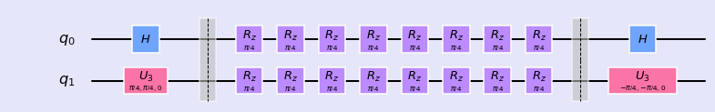
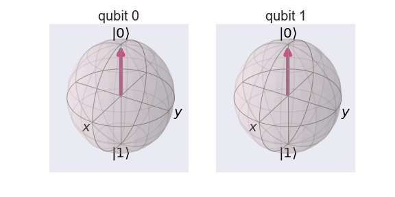
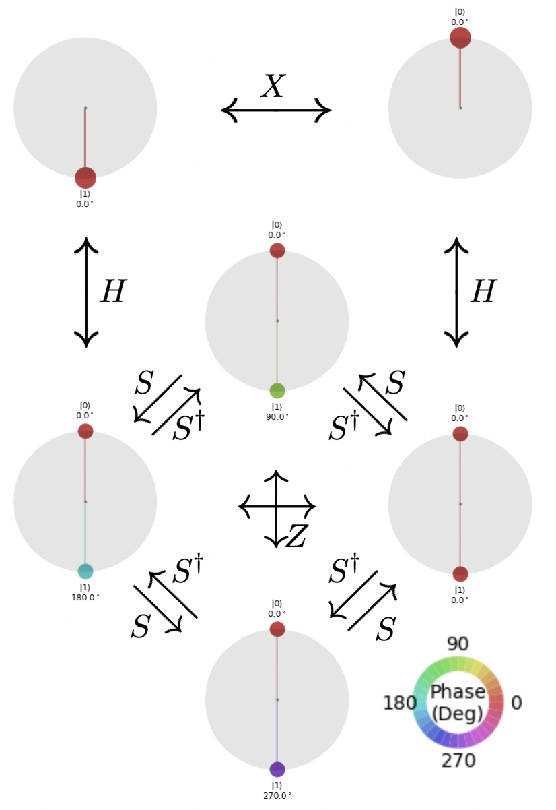

R-phi Gate
The Rϕ-gate performs a rotation of 𝜙 around the Z-axis. It has the matrix:
$$ R_\phi = \begin{bmatrix} 1 & 0 \\ 0 & e^{i\phi} \end{bmatrix}$$
%matplotlib inline import numpy as np import IPython import matplotlib.pyplot as plt from qiskit import QuantumCircuit from qiskit.tools.jupyter import * from qiskit.visualization import * import seaborn as sns sns.set()
from helper import * import os import glob import moviepy.editor as mpy
R-Phi (1 qubit)
qc1 = QuantumCircuit(1) qc1.rz(np.pi/4, 0) style = {'backgroundcolor': 'lavender'} qc1.draw(output='mpl', style = style)

getStateVector(qc1)
array([1.+0.j, 0.+0.j])
getBlochSphere(qc1)

R-phi (2 qubits)
qc2 = QuantumCircuit(2) qc2.rz(np.pi/4, 0) qc2.rz(np.pi/4, 1) style = {'backgroundcolor': 'lavender'} qc2.draw(output='mpl', style = style)

Fun Experiment (1 qubit)
qc_e1 = QuantumCircuit(1) qc_e1.h(0) qc_e1.barrier() for i in range(10): qc_e1.rz(np.pi/5, 0) qc_e1.barrier() qc_e1.h(0) style = {'backgroundcolor': 'lavender'} qc_e1.draw(output='mpl', style = style)

- Get Bloch

- Get Phase

Fun Experiment (2 qubits)
qc = QuantumCircuit(2) qc.h(0) qc.u3(np.pi/4,np.pi/4,0,1) qc.barrier() for i in range(8): qc.rz(np.pi/4, 0) qc.rz(np.pi/4, 1) qc.barrier() qc.h(0) qc.u3(-np.pi/4,-np.pi/4,0,1) style = {'backgroundcolor': 'lavender'} qc.draw(output='mpl', style = style)

- Get Bloch

- Get Phase

Special R-phi Gates:
\( R_{\phi}\) gate is reprisented by \(S\) gate when \( \phi = \pi/2 \). It is also called \( \sqrt{Z} \) gate.
$$ S = \left( \begin{array}{cc} 1 & 0 \\ 0 & e^{\frac{i\pi}{2}} \end{array}\right), \quad S^\dagger = \left( \begin{array}{cc} 1 & 0 \\ 0 & e^{-\frac{i\pi}{2}} \end{array}\right) $$

\( R_{\phi} \) gate is reprisented by \( T \) gate when \( \phi = \pi/4 \).
$$T = \left( \begin{array} 1 & 0 \\ 0 & e^{\frac{i\pi}{4}} \end{array}\right), \quad T^\dagger = \left( \begin{array}{cc} 1 & 0 \\ 0 & e^{-\frac{i\pi}{4}} \end{array}\right)$$